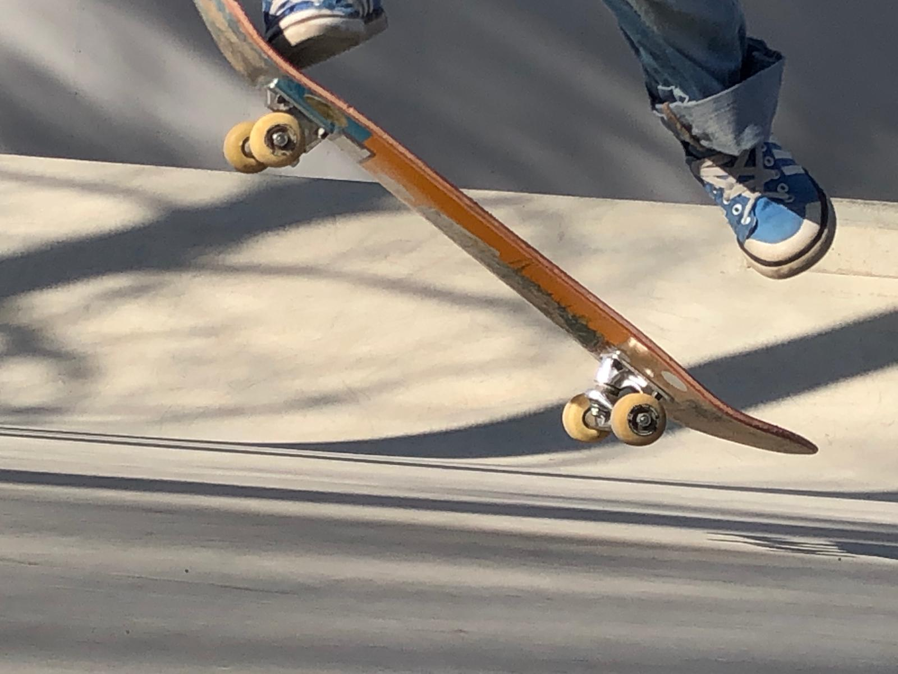
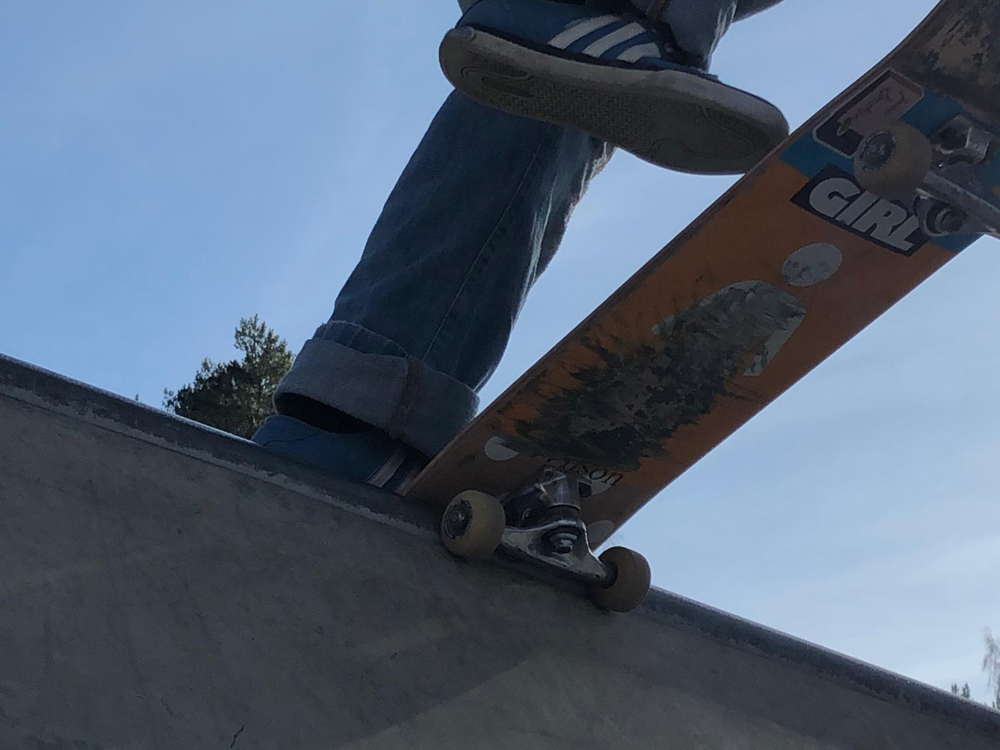
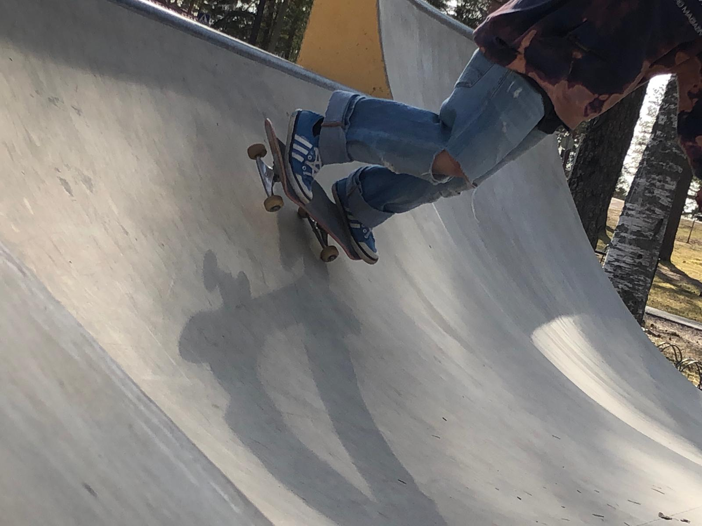
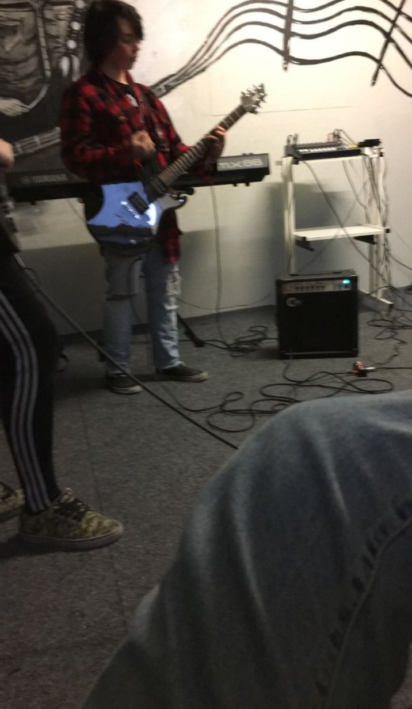

Skeittaus on rullalaudalla temppujen tekemistä, liikkumista ja kaatumista. Skeittaamisesta on tullut tärkeä harrastus ja iso mielenkiinnon kohde joka parantaa liikuntaa ja mielenterveyttä kun onnistuu jossain. Skeittaamisessa on myös jännitys ja pelko mukana varsinkin jos yrittää jotain uutta tai pelottavaa mutta kun siinä onnistuu se on sen arvoista.
  Olen alkanut harrastamaan musiikkia noin 14 vuotiaana kun kiinnostuin rock ja metal musiikista ja ostin itselleni ensimmäisen sähkökitaran ja vahvistimen ja aloin sillä opettelemaan. Olin opetuksessa myös vuoden jossa opin paljon. Nykyään tykkään soittaa melkein mitä vaan mikä osuu käteen.
